Sauvez votre parcelle de l'expropriation en 15 minutes depuis votre téléphone
Service destiné aux propriétaires fonciers en Russie. Il analyse les risques au titre de la Loi fédérale n° 101-FZ sur la circulation des terres agricoles, prépare un plan d'action et mobilise un juriste accrédité si la situation l'exige.

Chaque parcelle est sous surveillance satellitaire selon la dernière révision de la Loi fédérale 101-FZ.
Tout propriétaire de terres agricoles est exposé
Le 1er mars 2025 est entrée en vigueur la Loi fédérale n° 307-FZ, qui élargit les motifs d'expropriation. Le 1er septembre 2025, le Décret gouvernemental n° 826 a fixé des critères concrets de non-exploitation. La surveillance satellitaire est désormais ancrée dans la législation.
99 % des terres en infraction
Région de Tver, T1 2026 : 99 % des terres inspectées présentent des indices de non-exploitation au titre de la Loi 101-FZ. Le cas n'est pas isolé : les contrôles se renforcent dans toute la Fédération de Russie.
6 mois pour réagir
À compter de la mise en demeure, le propriétaire dispose d'au minimum 6 mois pour faire cesser les indices d'infraction. La fenêtre s'est rétrécie : elle pouvait atteindre 12 mois auparavant.
Spécificités régionales
À Kalouga, c'est le Ministère du Développement économique qui décide. Dans la région de Moscou, la loi régionale n° 75/2004-OZ s'applique. Sans connaître les procédures, on rate facilement un délai et on perd au tribunal.
Sept stratégies — une faite pour vous
Le service détermine la voie optimale pour faire cesser les indices d'infraction selon votre situation : ancienneté de la parcelle, région, cause de l'infraction, votre disponibilité à agir seul ou à mobiliser un juriste.
Restauration de l'usage agricole
Mise en culture de la parcelle selon les règles agrotechniques avec traçabilité de chaque étape. La stratégie la plus fréquente — efficace dans 60 % des dossiers.
Location à un agriculteur
Bail conclu avec une exploitation paysanne (KFKh) ou un complexe agro-industriel — l'agriculteur voisin reprend la parcelle et l'exploite lui-même. Enregistrement auprès du Rosreestr.
Changement de TUA
Modification du type d'usage autorisé (TUA) au sein de la catégorie agricole — auprès de l'administration locale. Procédure standard.
Conversion de catégorie de terres
Transfert de la parcelle de la catégorie agricole vers les terres de zones d'habitation ou industrielles. Particulièrement rentable dans la région de Moscou — la valeur peut être multipliée plusieurs fois.
Vente aux co-titulaires ou à un complexe agro-industriel
Sortie rapide via une cession. Nous prenons en compte le droit de préemption des autres co-titulaires (Loi 101-FZ, art. 8) et formalisons correctement les notifications.
Recours juridictionnel
Lorsque l'autorité compétente a commis des irrégularités procédurales. Recours au titre du chapitre 22 du Code de la procédure administrative russe (KAS RF). Délai de prescription — 3 mois.
Trois étapes — de l'inquiétude au plan
Le service est conçu pour que la première action utile prenne 15 minutes. Sans formulaires interminables, sans jargon juridique.
Saisissez le numéro cadastral
Le numéro, l'adresse ou la géolocalisation suffisent. Nous obtenons l'extrait du Registre fédéral unifié des biens immobiliers (USRN) en 5 minutes en arrière-plan — légalement et via un fournisseur certifié.
Recevez votre fiche-risque
L'AI-2 analyse l'extrait, les données satellitaires et l'historique. Il affiche le niveau de risque (vert/jaune/rouge) avec les indices concrets d'infraction.
Suivez le plan
5 à 9 étapes assorties d'échéances. Les modèles de documents sont déjà générés. Vous signez par code SMS — Signature Électronique Simple (SES) au titre de la Loi fédérale n° 63-FZ. Vous mobilisez un juriste si nécessaire.
La terre, le droit et la technologie dans une seule application
Pile IA russe (YandexGPT 5.1 Pro et GigaChat 2/Ultra) avec une base normative propriétaire. Tous les calculs se font dans la juridiction russe.
AI-1 OCR
Reconnaissance des photos et PDF, classification automatique du document.
AI-2 Diagnostic
Scoring de risques à partir de l'extrait USRN, des données satellitaires et de l'historique.
AI-3 Modèles
Génère les documents primaires adaptés à votre situation et à votre région.
AI-4 Chat
Répond aux questions de droit avec liens directs vers les articles.
AI-5 Antifraude
Protège le compte contre la fraude et la falsification de documents.
AI-6 Routage
Sélectionne 2–3 juristes selon la région et la spécialisation.
AI-7 Traduction
Traduit les formulations juridiques complexes en langage clair.
Playbooks régionaux
Les 7 régions du cluster de Moscou sont prises en compte dans chaque fonction.
Vous payez le résultat, pas un abonnement
Le diagnostic de base est gratuit. Vous ne payez que si vous choisissez un plan avec accompagnement par un juriste accrédité.
Autonome
Pour les utilisateurs sûrs d'eux ayant des dossiers simples
- Diagnostic des risques AI-2 — gratuit
- Accès à 7 modèles de documents
- Chat-conseiller avec liens vers les articles
- Téléversement et stockage des documents en Russie
- Signature SES par code SMS
- Notifications et suivi des échéances
Avec juriste
Pour les dossiers complexes avec risque contentieux
- Tout ce qui est inclus dans « Autonome »
- Sélection d'un juriste selon la région et la spécialisation
- Contrat et paiement — au sein de l'application
- Accompagnement jusqu'à la clôture du dossier
- Révision de tous les documents par le juriste
- Représentation devant le tribunal si nécessaire
7 régions du cluster de Moscou
Au lancement, le service couvre Moscou et 6 régions voisines. Pour chacune, nous tenons compte des particularités des autorités compétentes, des programmes de subventions et de la jurisprudence locale.
Région de Tver
250 000 ha de terres en jachère. 99 % des terres inspectées au T1 2026 présentent des indices d'infraction. Un immense entonnoir pour la stratégie S-1.
Région de Iaroslavl
400 000 ha de terres en jachère. Le programme régional de compensation rend la stratégie S-1 économiquement avantageuse, même avec des prestataires.
Région de Kalouga
La décision d'expropriation relève du Ministère du Développement économique (et non du Ministère de l'Agriculture comme dans les autres régions). Élément critique pour la compétence juridictionnelle et l'en-tête des courriers.
Conformité — intégrée à l'architecture
Pas une simple case cochée dans la politique de confidentialité. Chaque composant du service est conçu d'emblée pour la réglementation russe.
Niveau de sécurité 2 selon la Loi 152-FZ
Niveau cible de protection des données personnelles : Niveau de sécurité 2 (selon les exigences FSTEC). Certification FSTEC prévue au mois M11. Toutes les données sont stockées en juridiction russe (Yandex Cloud).
Loi 63-FZ — signatures électroniques
SES par code SMS pour l'utilisateur. Signature Électronique Qualifiée (SEQ) via KriptoPro pour le juriste. Le journal des signatures est conservé 5 ans avec horodatage et IP.
Loi 149-FZ — régime ORI
Le journal des actions est conservé dans ClickHouse pendant 1 an, conformément aux exigences applicables aux organisateurs de diffusion d'information (ORI). Prêt à répondre aux requêtes du FSB.